Controllers¶
TODO: document the controller API
Proportional-derivative controller¶
- class arboris.controllers.ProportionalDerivativeController(joints, kp=None, kd=None, gpos_des=None, gvel_des=None, name=None)¶
A proportional-derivative controller.
A
 -dimensional PD controller which delivers a torque 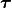:
-dimensional PD controller which delivers a torque 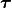: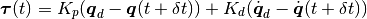
where 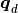 and 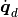 are the respectively the desired position and velocity and where 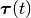 is assumed constant on the
![[t,t+dt]](_images/math/22aa3420f8b65ad4c6dc9e0c305c451cd65da8d1.png) interval.
interval.Here
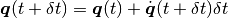
so
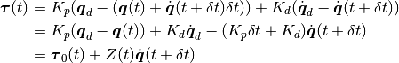
with
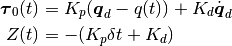
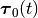 can be denoted as the reactive part of the control, while 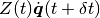 can be considered as the proactive part which depends on the future generalized velocity 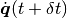 (after integration).
 is denoted the impedance of the controller.
is denoted the impedance of the controller.Track an error with a proportional-derivative controller.
Parameters: - joints (iterable) – a list of LinearConfigurationSpaceJoint one wants to control (x is the total dimension of the controlled joints)
- kp ((x,x)-array) – the proportional gains
- kd ((x,x)-array) – the derivative gains
- gpos_des ((x,)-array) – desired generalized position
- gvel_des ((x,)-array) – desired generalized velocity
- name – the name of the controller
Weight controller¶
- class arboris.controllers.WeightController(gravity=-9.81, name=None)¶
A contoller which applies weight to joints.
Test:
>>> from arboris.core import simplearm >>> w = simplearm() >>> joints = w.getjoints() >>> joints['Shoulder'].gpos[0] = 3.14/4 >>> joints['Elbow'].gpos[0] = 3.14/4 >>> joints['Wrist'].gpos[0] = 3.14/4 >>> c = WeightController() >>> w.register(c) >>> w.init() >>> w.update_dynamic() >>> (gforce, impedance) = c.update()
Simulate gravity along the world up axis.
Parameters: - gravity (float) – the gravity magnitude along world up axis (can be negative)
- name (string or None) – the name of the controller